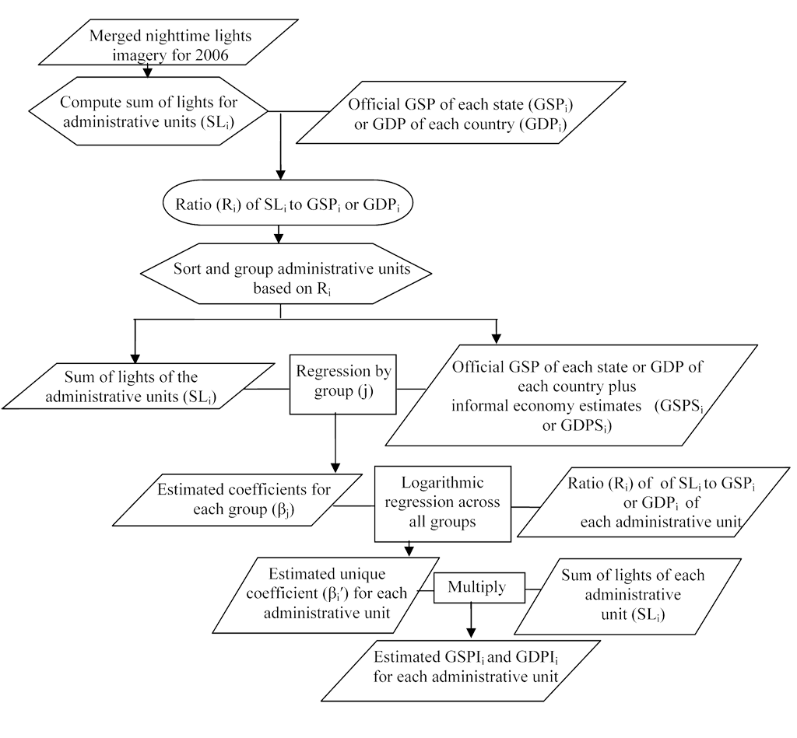
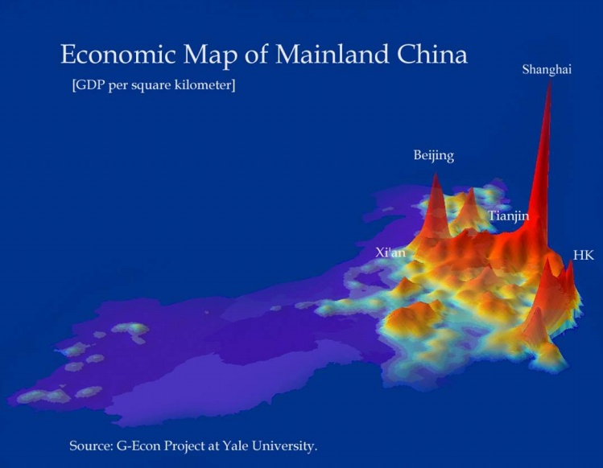
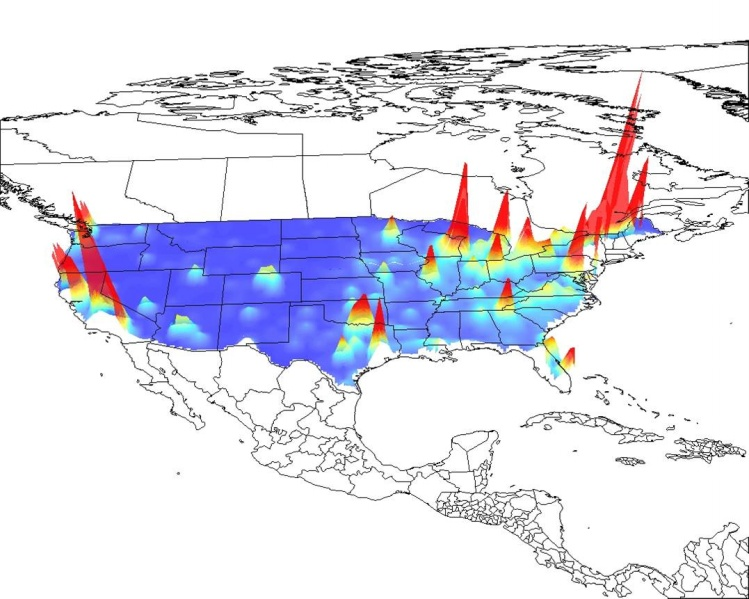

关键词： GDP空间分布 土地利用 夜间照明数据 地学研究
“为什么在欧美大城市周围看不到农田？不是因为他们土地多，而是人均GDP空间分布梯度问题所致。在市场经济和土地私有制下，不可能在人均GDP很高（地价也很高）的城市市区附近，保留人均GDP很低的农田生产。中国以前是城乡二元结构，城市户口和农民户口严格区分，维持城市郊区的农业生产。然而现在这种二元结构的限制，逐渐限制不了了。大城市周围的农村土地，当地农民自己不种，雇外地人来种；盖房子自己不住，而是用以出租，农民充分了解他自己那个地方的价值，这就造成了所谓的“城中村”问题。中国大城市的发展必然也和国外相似，不可能当大城市市区的人均GDP很高的时候，还让周围去种粮食，靠城市边缘保留农田来解决粮食（包括蔬菜）问题是没有必要的，也是不可能的。”
这次与秦老师的讨论围绕“人均GDP空间分布问题”展开，引文是秦老师一次报告的发言，也是上次讨论引出的话题。
不过一开始的讨论先是围绕数据展开，因为上述问题的研究离不开数据，而人均GDP空间分布的数据之前并不好获得，因为GDP的统计多数按行政区域为单位，统计出的总量无法反应细致的分布问题。比如，朝阳区即便有很多城中村，但被CBD一平均，也很难反映出准确的问题，因此平均数在很大程度上是靠不住的。随着数据的不断增多，研究方法也在变革。近几年有一些经济学家及地理学家开始利用卫星拍摄的世界夜间照明地图研究人口、GDP等的空间分布问题。因为经研究发现，人口和GDP的分布与夜间照明的分布有很强的相关性。
YALE著名的经济学教授William D. Nordhaus还在前人研究的基础上划分了全世界经度1°X纬度1°的网格，绘制了全球的GDP空间分布地图。（详见： http://gecon.yale.edu/）

图片来源：Tilottama Ghosh等， Shedding Light on the Global Distribution of Economic Activity

China GDP 图片来源： http://gecon.yale.edu/

US GDP 图片来源： http://gecon.yale.edu/
但些数据还是有缺点，最简单的就是受制于夜间照明图片的精度（图片还有“过曝”的情况），分析多用于缺少数据的非洲、拉美及其他第三世界国家（貌似中国也算第三世界），精度也局限在国家、区域层面，最多到城市群，很难分析城市内部问题。这时我们想到了一些方法可以进行进一步的分析，比如从住房水平分布、住房价格分布、小汽车分布等来判断。
数据的事情讲完后，秦老师讲了一个朱镕基当年关于北京郊区农田的讲话（“我不稀罕那点粮食”出处待查），来佐证并进一步发展自己的观点：
几年前，大都市周围的农田被要求从种粮食改为种树，纳入国家“退田还林”计划。但让农民去种树，ＧＤＰ能比种粮高吗？给他补贴就能种好树吗？能否设想采取下述政策：把一些土地划成小块，出售给个人，所有权也给他，让他自己建自住的住宅。政府制定规划，限制容积率，限制占地面积，规定绿化要求。用２０～３０％的地建房，剩下７０～８０％的地让住家去种树，去绿化，绿化效果不会比让农民用１００％的地种树差。（个人补充： 而且生态多样性要强于政府行为，住户绿化选择的树种及其他植物，种类和质量上都优于政府行为）另外，可以有条件进行太阳能利用，而在城里高层住宅做不了；还有，住宅总是要用水的，用过的水可以回用来浇灌绿化，同时渗透到地下去，补给地下水；此外，一些在国外绿色住宅中行之有效的生态化措施，如屋面绿化、垂直绿化、雨水利用等等也可以推广。这些生态和环境方面的正面效益可以平衡占用土地的负面影响。而且，这些住户的庭院绿化及其维护是一种‘消费行为’，这些人住在城市高楼内，想花钱（消费）得到自己的绿化环境而不可得，住在这里就可以有这种消费。况且住户们的庭院绿化既是自己的“消费”，也同时提供很好的环境效益，个人与公众都获益。加之，为这些住户服务还可以发展第三产业，解决一部分农民就业问题。 而‘退田还林’是政府出钱，让农民种树，是公益事业，政府财力有限，农民收入也少。”
上述观点在想一步就会发现，政府死守所谓的18亿亩耕地红线有待商榷。（18亿亩红线的由来：96？年粮食白皮书提到我国耕地面积是12亿亩多，后卫星遥感数据得出18亿亩多。具体待查）因为每年土地修复的量与城市建设的量是差不多的，真正是耕地大量减少的是98年的退田还林、退田还牧、退田还湖。（数据待查）而大城市周边的耕地提供的农业价值远远小于真实的土地价值。而且现在所谓的土地紧张不是土地资源不够，而是土地利用效率低，浪费现象严重。从各地的城市开发区规划建设情况就能发现这一问题：开发区是大马路+大楼，而不是供人居住的城市。
快要结束的时候还来了个学术小段子，关于T大地学研究的问题。谈话过程中我们一致认为地理研究、气象研究、GIS、遥感等对于认识地球、认识城市非常重要，而且地学作为一个基础学科为什么T大迟迟没有。秦老师说到，当年他也发现这个问题了，而且中科院体系下地学研究可是有一百多个院士的大方向，T大当年院系拆分时把地学研究一部分给了P大，一部分给了地质大学。后来在多方努力下，前几年T大成立了个地学研究中心：）
待续……
P.S.:受美国政府关门的影响，夜间亮度分布数据以及下载不到了。
(现在又可以了)